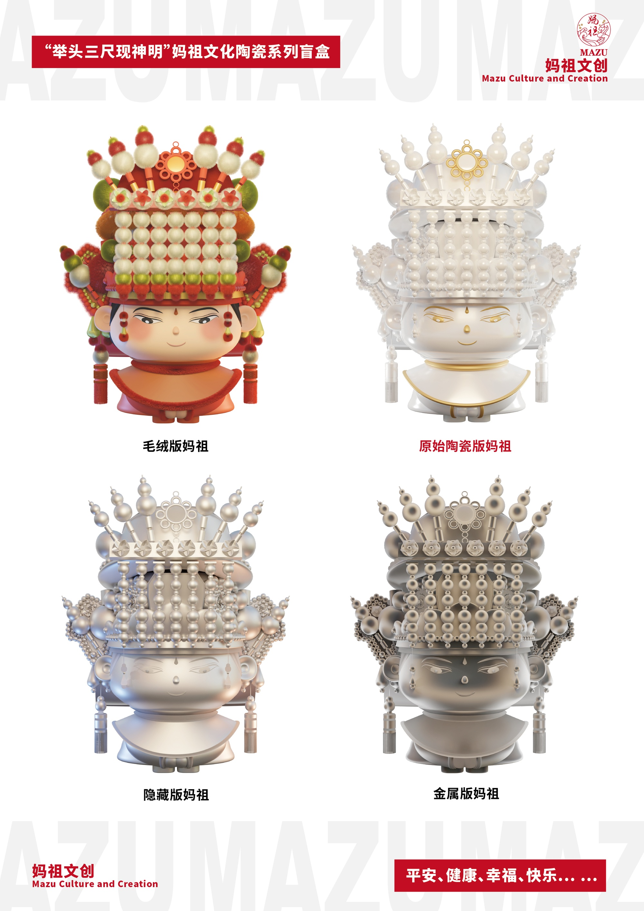
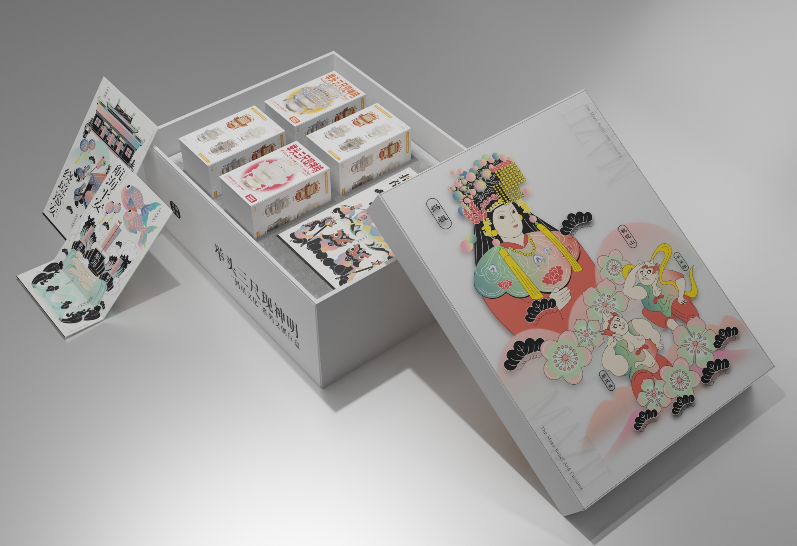
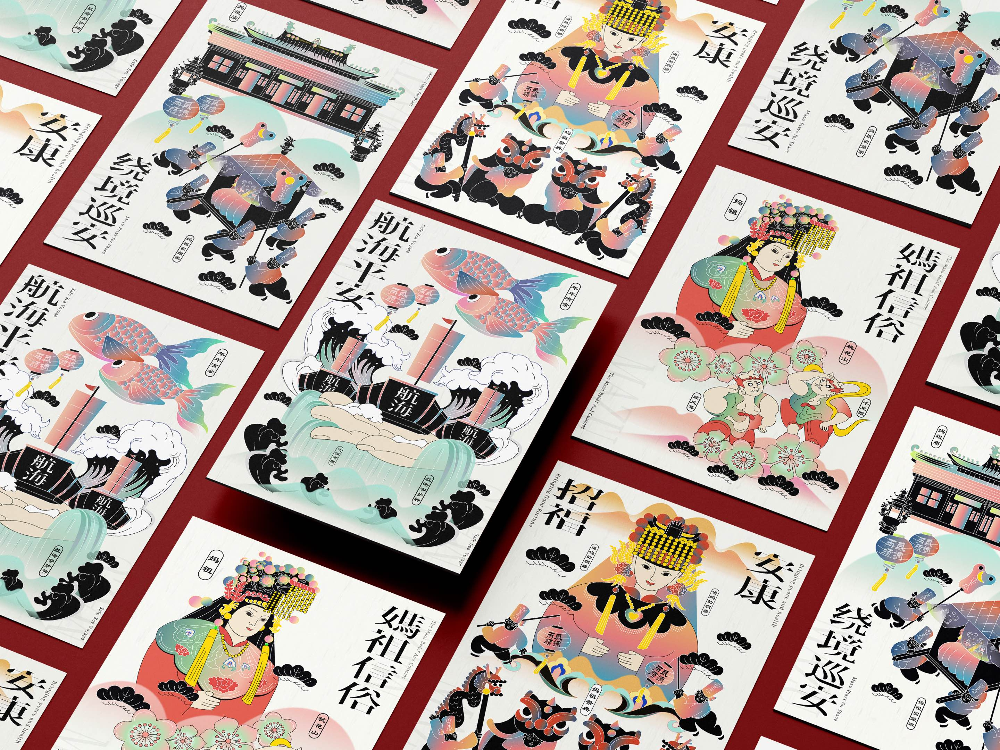
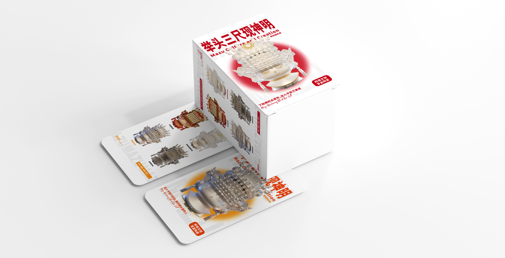

MAZU
Raise Your Head Three Feet to Show the Gods
Inspired by ancient beliefs, this project reimagines tradition through modern design.
It tells stories of ancestral deities to preserve and promote cultural heritage.
Blending folklore with youth aesthetics, it creates a new wave of creative expression.
Surrounding designs of Mazu culture are not just products—they are carriers of tradition and heritage.
They offer a window into local beliefs while creating new opportunities for regional tourism and economy.
The reimagined “Mazu” is friendly, youthful, and modern, blending tradition with contemporary aesthetics.

There are four unique versions of the Mazu blind box, each reflecting different aspects of her cultural symbolism.
The designs reinterpret traditional elements through playful and collectible forms.
A set of themed posters was also created to enrich the visual experience and support cultural storytelling.

The illustration section was designed by my collaborator, Xiao Sihan.

The design is inspired by Mazu traditions like her homecoming, border patrol, and ceremonial rituals.
It visualizes the spiritual and cultural essence conveyed through Mazu belief and folk practices.
Symbolic imagery and subtle metaphors are used to express ideas through storytelling.

Sincere thanks to Associate Professor Dong Hongyu for her invaluable guidance on the project.